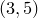

set origin <x>, <y>
The set origin command is used to set the location of the bottom-left corner of the next graph to be placed on a multiplot canvas. For example, the command
set origin 3,5
would cause the next graph to be plotted with its bottom-left corner at position  centimetres on the multiplot canvas. Alternatively, either of the coordinates may be specified as quantities with physical units of length, such as unit(35*mm). The set origin command is of little use outside of multiplot mode.